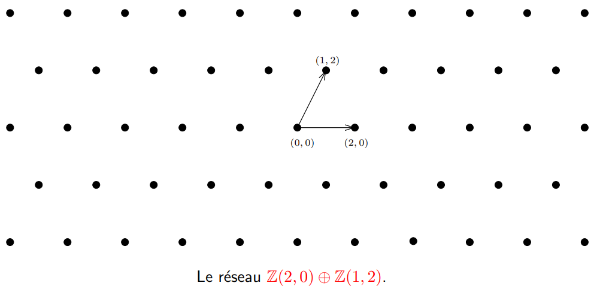
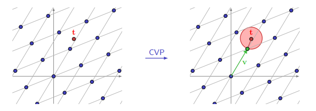
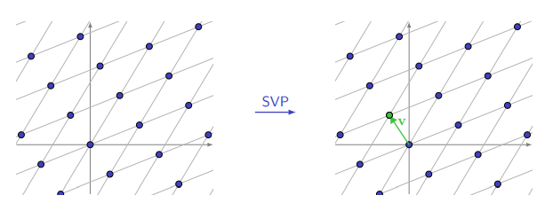

Introduction aux réseaux euclidiens
Introduction
Les réseaux euclidiens (Lattice en anglais) jouent un rôle essentiel en cryptographie moderne.
Dans cet article, nous allons explorer l’historique des réseaux euclidiens en cryptographie, leur utilisation dans les systèmes de chiffrement, ainsi que les problèmes mathématiques auxquels ils sont confrontés.
Nous nous concentrerons en particulier sur le Closest Vector Problem (CVP) et le Small Vector Problem (SVP), qui sont des problèmes centraux dans ce domaine.
Petit point Historique
L’étude des réseaux euclidiens en mathématiques remonte au XVIIIe siècle, lorsque Leonhard Euler a commencé à examiner les structures géométriques des points dans l’espace.
Cependant, ce n’est qu’au XXe siècle que le concept de réseaux euclidiens a été appliqué à la cryptographie.
Dans les années 1990, Ajtai, Dwork, Regev et autres ont introduit la notion de réseaux euclidiens comme base de problèmes difficiles en cryptographie, ouvrant la voie à de nouvelles constructions cryptographiques.
Explication
Un réseau euclidien (lattice en anglais) de dimension n est un sous-groupe discret de ($\mathbb{R}^n$,+)
On peut aussi le définir comme ceci:
- On note $\mathcal{L}$ une partie non vide de $\mathbb{R}^n$, $\mathcal{L}$ est un réseau si il existe $b_1,…b_d$ $\mathbb{R}$-linéairement indépendants tels que: $\mathcal{L}=\mathbb{Z}.b_1⊕…⊕\mathbb{Z}.b_1$
- $b_1,…b_d$ est noté la base du réseau.
Voici un exemple:

On appele le Rang du réseau $\mathcal{L}$, le nombre d’élément dans une base de $\mathcal{L}$. Ici, nous allons majoritairement désigner des full-rank lattices, ainsi la dimension du réseau sera égale à son rang: $m=n$
La distance minimale d’un réseau $\mathcal{L}$ est noté $\lambda_1(\mathcal{L})$:
- $\lambda_1(\mathcal{L}) := min_{v\in{\mathcal{L}\setminus {0}}}(||v||_2)$
Théorème de Minkowski:
Soit $\mathcal{L}$ un réseau de dimension $n$, on a :
- $\lambda_1{\mathcal{L}} \leq \sqrt{n}*|det(\mathcal{L})|^{1/n}$
$\lambda_1$ a un intérêt particulier car il fournit une norme par laquelle nous pouvons évaluer la longueur des vecteurs dans un réseau.
Utilisation en Cryptographie Moderne
Les réseaux euclidiens sont largement utilisés en cryptographie moderne pour construire des systèmes sécurisés.
La Construction de Cryptosystèmes
Les réseaux euclidiens sont utilisés pour construire des protocoles cryptographiques résistants à des attaques classiques et quantiques.
Deux des constructions les plus importantes utilisant des réseaux sont :
-
Chiffrement basé sur les Réseaux (Lattice-Based Encryption)
Les réseaux euclidiens fournissent une base pour la construction de systèmes de chiffrement post-quantiques. On retrouve les schémas de chiffrement entièrement homomorphes (FHE) et les schémas de chiffrement basés sur le problèmeLearning With Errors (LWE).
Ces systèmes sont considérés comme résistants aux attaques des ordinateurs quantiques, ce qui en fait une alternative prometteuse à la cryptographie à clé publique traditionnelle basée sur la factorisation et le logarithme discret. -
Signature Numérique basée sur les Réseaux (Lattice-Based Digital Signatures)
Les réseaux euclidiens sont également utilisés pour construire des schémas de signature numérique post-quantiques avec une sécurité robuste contre les attaques classiques et quantiques. Ces schémas de signature sont essentiels pour garantir l’intégrité et l’authenticité des données échangées.
Utilisation pour les Attaques de Cryptosystèmes
Les réseaux euclidiens peuvent aussi être utilisés pour des attaques de cryptosystèmes basés sur des problèmes comme le Closest Vector Problem (CVP) et le Small Vector Problem (SVP):
Closest Vector Problem (CVP):
Le Closest Vector Problem (CVP) consiste à trouver le vecteur d’un réseau $\mathcal{L}\in\mathbb{(Z/qZ)^n}$ le plus proche d’un point donné dans l’espace euclidien.
Formellement, étant donné un réseau euclidien généré par une base de vecteurs $\mathbf{B} = {\mathbf{b}_1, \mathbf{b}_2, \ldots, \mathbf{b}_n}$ et un vecteur cible $\mathbf{t}$, le CVP consiste à trouver un vecteur $\mathbf{v}$ dans le réseau qui minimise la distance euclidienne entre $\mathbf{t}$ et $\mathbf{v}$.
Le problème CVP peut être formulé comme ceci :
Trouver $\mathbf{v} \in \mathbb{R}^n$ tel que :
$\mathbf{v} = \sum_{i=1}^{n}x_i * \mathbf{b}_i$ avec $x_i \in \mathbb{Z}$
et que la distance entre $\mathbf{t}$ et $\mathbf{v}$:
$||\mathbf{t} - \mathbf{v}||$ = $||\mathbf{t} - \sum_{i=1}^{n}x_i \mathbf{b}_i ||$ soit minimale.

Small Vector Problem (SVP)
Le Small Vector Problem (SVP) consiste à trouver le vecteur le plus court (le plus petit en norme euclidienne) du réseau euclidien. Etant donné un réseau euclidien généré par une base de vecteurs $\mathbf{B} = {\mathbf{b}_1, \mathbf{b}_2, \ldots, \mathbf{b}_n}$, le SVP consiste à trouver un vecteur non nul $\mathbf{v}$ dans le réseau tel que la norme de $\mathbf{v}$ soit minimale.
Le problème SVP peut être formulé comme ceci :
Trouver $\mathbf{v} \in \mathbb{R}^n$ tel que:
$\mathbf{v} = \sum_{i=1}^{n}x_i\mathbf{b}_i$ avec $x_i \in \mathbb{Z}$ et $\mathbf{v} \neq \mathbf{0}$ et que la norme de $\mathbf{v}$ soit minimale.
$||\mathbf{v}|| = || \sum_{i=1}^{n}x_i\mathbf{b}_i || = \lambda_1(\mathbf{v})$.

Algorithmes de Réduction
Les algorithmes de réduction tels que LLL et BKZ sont utilisés pour résoudre efficacement le CVP et le SVP. En effet, ils permettent de transformer la réseau dans une meilleure base avec des vecteurs orthogonaux et plus petits.

Dans cette exemple, (wikipedia), on retrouve une base originale composé des vecteurs $V_1$ et $V_2$, une réduction permet de trouver la base formée de $U_1$ et $U_2$
1. Algorithme LLL (Lenstra-Lenstra-Lovász)
L’algorithme LLL est une méthode de réduction de base dans un réseau euclidien. Il prend en entrée une base quelconque $(b_1,…,b_n)$ et la transforme en une base presque orthogonale, en réduisant la taille des vecteurs.
L’idée principale de l’algorithme LLL est de remplacer les vecteurs de la base qui ne sont pas "presque orthogonaux" par des combinaisons linéaires entières de ces vecteurs. L’algorithme s’exécute en temps polynomial.
À l’origine, les applications consistaient en:
- La production d’un algorithme de factorisation des polynômes à coefficients rationnels en produits de polynômes irréductibles.
- La résolution des problèmes d’optimisation linéaire avec solutions entières et dimensions fixes.
L’algorithme LLL a par exemple rendu inefficaces tous les cryptosystèmes utilisant le problème du sac à dos.
Il a une complexité polynomiale, en $O(n^6*log(max(||b_i||_2))^3)$ et son vecteur le plus court a pour norme $||b_1||_2 \leq 2^{(n-1)/2}*\lambda_1(\mathcal{L})$.
Voici le pseudo-code de l’algorithme:
- Entrée: Une base $\mathbf{B} = [\mathbf{b}_1, \mathbf{b}_2, \ldots, \mathbf{b}_n]$ du réseau
- Sortie: Une base réduite de $\mathbf{B}$
$\textbf{Procédure Réduction LLL}(\mathbf{B}, \delta):$
$\quad \text{Réduction Gram-Schmidt}(\mathbf{B})$
$\quad i \gets 2$
$\quad \text{Tant que } i \leq n:$
$\quad \quad \text{Pour } j \text{ de } i-1 \text{ à } 1 \text{ par pas de } -1:$
$\quad \quad \quad m_{i,j} \gets \frac{\langle \mathbf{b}_i, \mathbf{u}_j \rangle}{\langle \mathbf{u}_j, \mathbf{u}_j \rangle}$
$\quad \quad \quad \mathbf{b}_i \gets \mathbf{b}_i -\text{Arrondi} (m_{i,j}) \cdot \mathbf{b}_j$
$\quad \quad \text{Fin Pour}$
$\quad \quad \text{Réduction Gram-Schmidt}(\mathbf{B})$
$\quad \quad \text{Si } \delta \cdot \langle \mathbf{u}_i, \mathbf{u}_i \rangle > \langle \mathbf{b}_i, \mathbf{b}_i \rangle:$
$\quad \quad \quad i \gets i-1$
$\quad \quad \text{Sinon:}$
$\quad \quad \quad i \gets i+1$
$\quad \quad \text{Fin Si}$
$\quad \text{Tant que}$
$\quad \textbf{Retour} \mathbf{B}$
$Fin~Procédure$
2. Algorithme BKZ (Block Korkine-Zolotarev)
L’algorithme BKZ est une amélioration de l’algorithme LLL.
Il utilise une approche en blocs pour obtenir une réduction plus forte des vecteurs dans le réseau euclidien. L’algorithme BKZ est plus efficace que LLL pour les instances difficiles, mais il est également plus coûteux en temps de calcul.
Voici le pseudo-code de l’algorithme:
- Entrée: Une base $\mathbf{B} = [\mathbf{b}_1, \mathbf{b}_2, \ldots, \mathbf{b}_n]$ du réseau
- Sortie: Une base réduite de $\mathbf{B}$
$\textbf{Procédure BKZ}(\mathbf{B}, \beta):$
$\quad \text{Trier } \mathbf{B} \text{ en utilisant une méthode de tri par taille décroissante des vecteurs}$
$\quad i \gets 1$
$\quad \text{Tant que } i < n:$
$\quad \quad \text{Pour } j \text{ de } i-1 \text{ à } 1 \text{ par pas de } -1:$
$\quad \quad \quad \text{Réduire } \mathbf{b}_i \text{ sur } \mathbf{b}_j \text{ dans le sous-réseau engendré par } \mathbf{b}_1, \mathbf{b}_2, \ldots, \mathbf{b}_j \text{ avec un facteur } \mu \text{ qui minimise la norme}$
$\quad \quad \text{Fin Pour}$
$\quad \text{Si } \text{le coefficient de Lovász est supérieur à } \beta:$
$\quad \quad i \gets i-1$
$\quad \text{Sinon:}$
$\quad \quad i \gets i+1$
$\quad \text{Fin Si}$
$\textbf{Retour} \mathbf{B}$
$\textbf{Fin Procédure}$
Nous verrons dans de prochains articles des applications de ces algorithmes.
Références:
- https://cims.nyu.edu/~regev/papers/pqc.pdf
- https://www.math.u-bordeaux.fr/~ybilu/algant/documents/theses/BERGAMI.pdf
- https://eprint.iacr.org/2015/938.pdf
- https://en.wikipedia.org/wiki/Lattice-based_cryptography
- https://github.com/josephsurin/lattice-based-cryptanalysis/blob/main/tutorial.pdf
- https://fr.wikipedia.org/wiki/Algorithme_LLL
- https://perso.ens-lyon.fr/nicolas.brisebarre/Exposes/tlse.pdf
- https://www.math.univ-paris13.fr/~lavauzelle/teaching/2020-21/docs/CP-slides-8.pdf